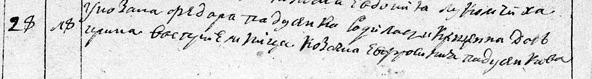
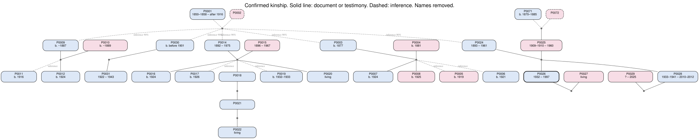

Projects / Genealogy
Genealogy
A knowledge base of my mother’s family line, in plain files and git.
- read in a document 231
- inferred 95
- hypothesis 9
- Status
- Private, because it names living relatives
- Started
- September 2026
- Kept in
- YAML and Markdown in git; the tree is built as PDF, SVG and a file for Gramps
- So far
- 215 people, 62 families, 123 sources
My first question to the agent was how to store a family’s genealogy “so that in 100 years my grandchildren could study all of it”. I asked for open formats, so the facts sit in git, one YAML card per person, and a script checks the data and builds the tree, also as a file for Gramps, the open-source genealogy program.
Every statement carries a status, from DOC, read in a document with a quote and an archive reference, to REJECTED, which stays in the base with the reason. Archive requests cost money, so searches that came up empty go to a separate file, “checked and empty”. “I just want a tree of all my relatives, including clusters not connected to the main branch,” I told the agent, so there are two trees, that one and one with only confirmed kinship.
| In the files | Status | Means |
|---|---|---|
[ДОК] | DOC | Read in a document; there is a quote and an archive reference |
[СВИД] | WITNESS | From a person’s memory, a relative’s story or a forum post |
[ВЫВОД] | INFERENCE | Concluded from several sources, with a confidence estimate |
[ГИП] | HYPOTHESIS | Needs checking |
[ОТВЕРГНУТО] | REJECTED | Checked and refuted; kept with the reason |
So far the line goes up to a great-great-grandfather who was a peasant in a village in Primorye, in the Russian Far East, in 1916. The family probably came there from Poltava province, now in Ukraine; the hypotheses file rates that at about 75%. My great-grandfather, a railway foreman in Primorye, registered his marriage in a Poltava village in 1931, and the record turned up in the Poltava regional archive. The oldest records so far are church registers from the 1780s from the next village, with people of both family surnames; their link to the 19th century is not established yet.
Agents did part of the archive search overnight in a browser. I logged into FamilySearch for them and downloaded scans from Yandex Archives myself when they couldn’t. The repository stays private because it names living relatives.
From the archive



